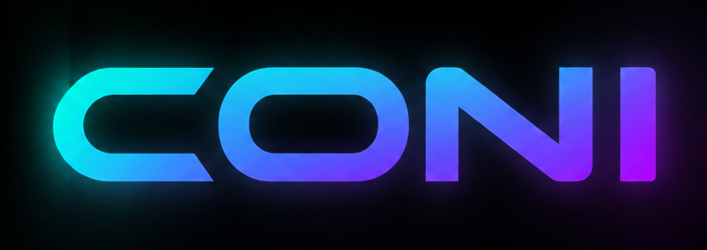

One wallet view.
Five networks.
Connect external wallets, read balances, and prepare bot funding with a visible approval boundary. Coni never asks for a seed phrase.

Secure wallet surfaceConnected wallets
Choose an EVM wallet or a Solana wallet to begin reading your balances.
Supports injected EIP-1193 wallets such as MetaMask, Rabby, Coinbase, OKX, and Phantom EVM, plus Phantom, Solflare, and Backpack on Solana.
Internal wallet
The production embedded wallet will use an isolated signer service with threshold authorization, withdrawal policy checks, hardware-backed secrets, and recovery drills. This browser build does not generate or store a seed phrase.
Bot wallet
Coni keeps the trading balance separate from your connected wallet. The bot buys, bridges, and sells only from its own signer-controlled address.
Tracked assets
Prepare funding
Funding is always a user-approved transaction from the connected wallet. Coni will only prepare a request after the backend returns a whitelisted destination and a fresh quote.
No funding request has been created. A destination must be supplied by the secure backend.